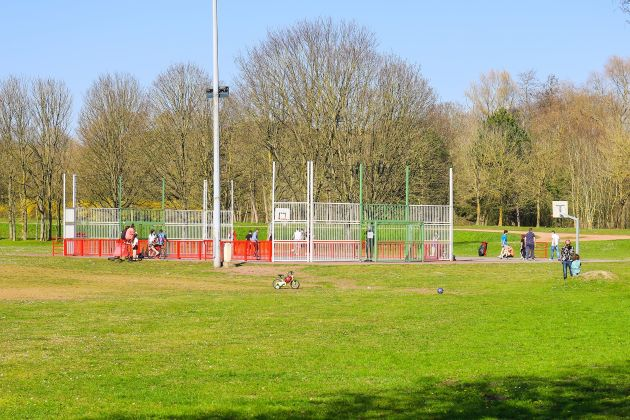
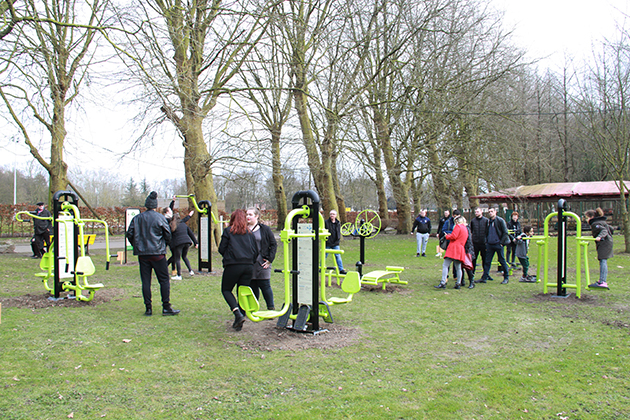

Le parc de le Glissoire est le parfait exemple de reconquête d'un
paysage minier.
Au début du siècle, on appelait cet endroit le marais, traversé par la
Glissoire (petite rivière). Ce site a été dégradé avec l'exploitation
minière envahi par les décharges d'ordure ménagère.
Dans les anéées 70, le syndicat intercommunal (créé en 1972 entre les
villes d'Avion et de Lens) a une tache ardue : reconquérir la nature
avec des plans d'eau et des arbres.
En 1975, les travaux commencent avec l'aménagement du Boulevard
d'Armolis à Avion afin de rejoindre un nouveau parking aménagé et le
creusement du lit du "Filet d'Avion".
Après plusieurs tranches de travaux jusqu'en 1977
(nettoyage du site, création d'un grand plan d'eau principal et le
boisement de son îlot, creusement des autres plans d'eau, les
plantations sur l'ancienne décharge, l'aménagement du parking nord,
stabilisation du sol et son boisement et transformation du sommet du
terril en plate-forme pour une vue panoramique), l'ancien puit de la fosse 5 laisse place à une magnifique zone de
loisirs, de détente, de promenade et de pratique du sport en plein air.
A voir le chantier à l'origine, on mesure le chemin parcouru...
L'évolution du parc de la Glissoire
Le parc de Glissoire, c'est 55 hectares de verdure, 6 lacs couvrant 12
hectares, 10 kilomètres de sentiers.
Sa faune et sa flore sont très riches, on y recense 72 espèces d'oiseaux
(dont 31 aquatiques et plusieurs migratoires) ainsi que 8000
arbres et arbustes (800 espèces différentes).
Depuis son inauguration, le 26 juin 1977, il est devenu le lieu préféré
des amateurs de pêche et de promemades en famille.
Affiche originale de l'inauguration du parc de la Glissoire
Un havre de paix où l'homme et la faune se côtoient harmonieusement.
Au fil du temps, le parc s'est doté de nouveaux aménagements.
Une aire de camping car (huits places généreuses en bordure du parc)

Un city stade

Un espace de fitnessUn belvédère avec vue à 360 degrésLe t'chi parc
Une plage aménagée gratuite ouverte l'été depuis 2009
Un toboggan de vingt-sept mètres aménagé sur les pentes du terril 81
Terminons la découverte du parc de la Glissoire en vidéo.